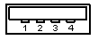
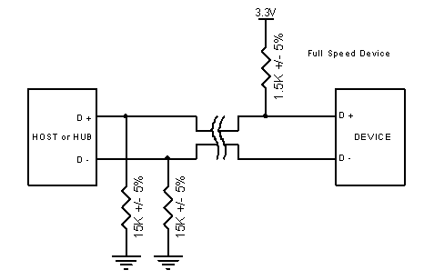
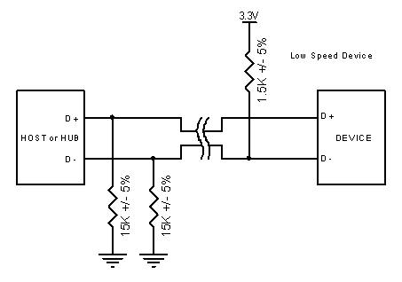

http://microsin.ru/content/view/1107/44/
Официальная спека на USB - 900 страниц, не считая дополнительных спек на отдельные классы. Если пройтись по главам спецификации USB 2.0, и кратко рассмотрим основные моменты, то получается следующее:
|
Главы |
Название |
Описание |
Страниц |
|
1 |
Введение |
Включает предназначение и область действия для USB. Самая важная часть информации в этой части – ссылка на Universal Serial Bus Device Class Specifications. Нет необходимости читать эту главу. |
2 |
|
2 |
Термины и аббревиатуры |
Это глава не требует пояснений – обычное зло любого стандарта. |
8 |
|
3 |
Основные вопросы |
Указывает цели USB, такие как Plug’n’Play и простота работы с ним конечного пользователя (не разработчика). Представляет скорости Low, Full and High Speed со списком возможностей, полученных для целей маркетинга. Нет необходимости читать эту главу. |
4 |
|
4 |
Обзор архитектуры |
Тут можно начать чтение. Эта часть предоставляет основной обзор системы USB включая топологию, скорости передачи данных, типы потоков данных, основные электрические параметры и т. д. |
10 |
|
5 |
Модель потока данных USB (Data Flow Model) |
Эта глава начинает рассказ о том, как передаются данные по Универсальной Последовательной Шине (Universal Serial Bus). Тут вводят и описывают такие термины как endpoints (конечные точки) пайпы или потоки (pipes). Большая часть главы посвящена каждому типу потока данных (Control, Interrupt, Isochronous и Bulk). Важно знать каждый тип передачи и его свойства, хотя это несколько тяжело для новичка. |
60 |
|
6 |
Механика |
Глава описывает два стандартных коннектора. Здесь важная информация – коннектор type A направлен на downstream (в сторону устройств USB) и коннектор type B направлен на upstream (в сторону хоста USB). Таким способом исключается возможность воткнуть кабель в два порта upstream. Все отсоединяемые кабели должны быть full/high speed, в то время как любой кабель low speed должен иметь подходящую цоколевку. Бегло просмотрев коннекторы, Вы можете пропустить эту часть, если не собираетесь заниматься производством коннекторов USB и/или кабелей. Разработчики PCB могут найти стандартные посадочные места (footprints) коннекторов. |
33 |
|
7 |
Электрика |
Глава рассматривает низкий уровень электрических сигналов, включая сопротивление линии, интервалы времени нарастания/спада, спецификации драйвера (передатчика)/приемника и кодирование уровня бита, bit stuffing и т. д. Наиболее важные части этой главы описывают идентификацию скорости устройства путем подключения смещающего уровень резистора на одной из линий данных, а также сравнение bus powered devices и self powered devices. Можете проскочить через эту главу, если Вы не разрабатываете микросхемы приемопередатчиков USB. Хороший даташит на устройства USB (микросхему) описывает величину терминирующих шину резисторов, которые Вам понадобятся, чтобы соблюсти сопротивление шины. |
75 |
|
8 |
Слой протокола |
Теперь мы начинаем рассматривать уровни протокола. Эта глава описывает пакеты USB на уровне отдельных байт, включая поля sync, pid, address, endpoint, CRC. После этого происходит переход на следующий слой протоколов, USB пакеты. Большинство разработчиков не обращает внимания на эти низкоуровневые слои протокола, так как применяемые ими микросхемы для устройств USB сами заботятся о них. Однако здесь важны понимание процедуры получения информации о статусе (status reporting) и процедуры установления связи (handshaking). |
45 |
|
9 |
Фреймворк устройства USB |
Это наиболее часто используемая глава во всей спецификации, и только одна из всех, которую я потрудился распечатать и переплести. Она описывает энумерацию шины и коды запросов (request codes - set address, get descriptor и т. п), наиболее используемый в программировании слой протоколов USB, важный для программистов и дизайнеров. Эта глава должна быть тщательно прочитана. |
36 |
|
10 |
Аппаратура и программное обеспечение хоста USB |
Эта глава покрывает проблемы, касающиеся хоста. Описываются генерация фреймов и микрофреймов, требования к контроллеру хоста, программные механизмы и драйверная модельUSB. Можете пропустить эту главу, если Вы не разрабатываете хост USB. |
23 |
|
11 |
Описание хаба |
Описывает работу хабов USB включая конфигурацию хаба, разделение транзакций, стандартные дескрипторы для класса хаба и т. п. Можете пропустить эту главу, если Вы не разрабатываете хабы. |
143 |
Теперь можно начать читать те части стандарта, которые действительно нужны. Если разрабатывается драйвер для периферии USB, то понадобятся только следующие части:
Разработчикам железа периферии (электроника) понадобятся только следующие главы:
Чтобы упростить понимание фундаментальных принципов USB, мы пропустим многое, касающееся непосредственно устройств USB High Speed.
Введение в Universal Serial Bus (USB)
USB версии 1.1 поддерживает две скорости – режим full speed 12 Mbits/s и режим low speed 1.5 Mbits/s. Режим 1.5 Mbits/s медленнее, и менее чувствителен к EMI (помехам), чем уменьшает стоимость ферритовых колец и снижает требования к качеству компонентов. Например, кварцы могут быть заменены на дешевые резонаторы. USB 2.0, который в настоящее время господствует для десктопов и ноутбуков, поднимает планку до 480Mbits/s. Эти 480Mbits/s обозначены как режим High Speed, и по этому параметру он может конкурировать с последовательной шиной Firewire.
Скорости USB
Universal Serial Bus – шина, управляемая исключительно хостом. На шине допустим один и только один хост. Спецификация USB сама по себе не поддерживает любую форму мультихостинга. Однако в спецификации On-The-Go, появившейся в стандарте USB 2.0, введен протокол Host Negotiation Protocol, который позволяет двум устройствам USB договориться, кто будет выполнять роль хоста. Это предназначено и ограничено одиночными подключениями точка-точка, например мобильный телефон – персональный органайзер, и не распространяется на хабы и конфигурации компьютеров. Хост USB ответственен за то, что предпринял все транзакции и выбрал полосу пропускания. Данные могут быть посланы методами различных транзакций, используя token-based протокол (протокол, основанный на символах).
USB использует топологию «tiered star» (многоярусная звезда), похожую на топологию 10BaseT Ethernet. Это предполагает возможное использование хабов, в противовес, например, шине Apple Desktop Bus, где клавиатура, мышь и другая периферия могут соединяться друг с другом (по топологии daisy chain). Топология tiered star имеет некоторые преимущества перед простой топологией daisy chain. Первое – потребляемая мощность каждого устройства может отслеживаться, и переключения, перегрузки не влияют на работоспособность других устройств USB. Все high, full и low speed устройства могут поддерживаться одновременно – хаб отфильтровывает транзакции high speed и full speed, таким образом устройства с низкими скоростями не получают данные со слишком высокой скоростью.
Контроллеры хоста USB имеют собственные спецификации. В стандарте USB 1.1 имеется две спецификации Host Controller Interface:
С появлением USB 2.0 понадобилась новая спецификация Host Controller Interface Specification для описания деталей регистрового уровня, специфичного для USB 2.0. Родился EHCI (Enhanced Host Controller Interface). Известные поставщики включая Intel, Compaq, NEC, Lucent и Microsoft объединились вместе, чтобы предоставить нам один стандарт интерфейса, и таким образом, только один новый драйвер для реализации в операционных системах.
USB носит имя, подразумевающее последовательную шину. Она использует 4 экранированных провода, из которых два передают питание (+5v & GND). Остальные два представляют витую пару (twisted pair) дифференциальных сигналов данных. Используется схема кодирования NRZI (Non Return to Zero Invert, без возврата к нулю с инверсией) для передачи данных с полем синхронизации для синхронизирования тактов хоста и приемника.
USB поддерживает «горячее» (plug’n’play) соединение с динамически загружаемыми и выгружаемыми драйверами. Когда пользователь закончил работу с USB-устройством, он просто вынимает его (или отсоединяет кабель), хост обнаружит отсутствие устройства и автоматически выгрузит драйвер.
Загрузка (выбор) подходящего драйвера осуществляется по комбинации PID/VID (Product ID/Vendor ID). VID предоставляется организацией USB Implementor's forum за деньги, и это еще одна точка преткновения для USB.
Другая более достойная внимания особенность USB - его режимы передачи. USB поддерживает Control, Interrupt, Bulk и Isochronous передачи. В то время как мы будем смотреть на другие режимы передачи позже, Изохронный режим позволяет устройству резервировать определеную часть от полосы пропускания с гарантируемым временем ожидания (latency). Это идеально для аудио и видео приложений, где перегрузка канала может привести к заметной потере данных или понижению частоты кадров. Каждый режим передачи предоставляет разработчику компромиссы в области детектирования ошибок и восстановления, гарантированного времени ожидания и полосы пропускания.
[Глава 2: Железо]
Коннекторы
Все устройства имеют upstream-соединение к хосту, и все хосты имеют downstream-соединение к устройству. Коннекторы upstream и downstream механически не взаимозаменяемы, что устраняет недопустимые петлевые соединения на хабах, такие как подсоединение downstream-порта в downstream-порт. Обычно используют два вида соединителей, называемые type A и type B, которые показаны ниже.
|
 |
| |
|
Type A USB Connector |
Type B USB Connector |
Type A plug (т. е. папа) всегда обращен к upstream (т. е. к хосту). Type A socket (т. е мама) обычно можно найти на стенке хоста и хаба. Например, сокеты type A расположены на компьютерных материнских платах и хабах. Type B plug всегда соединяются с downstream и, следовательно, type B socket расположены на USB устройствах. На первый взгляд звучит довольно путано, но разобраться можно (:
Интересно обнаружить в некоторых компьютерных магазинах кабели type A <--> type A с прямой разводкой проводов и многочисленные зарядники USB-типа. Это входит в противоречие со спецификацией USB. Устройства, являющиеся переходником между штеккером type A в штеккер type A являются мостом, используемым для соединения двух компьютеров друг с другом. Другие запрещенные кабели – удлинители USB, имеющие на одном конце штеккер (либо type A, либо type B) и сокет на другом конце (либо type A, либо type B). Эти кабели нарушают требования к длине кабелей USB.
USB 2.0 включает в себя errata, которое представляет коннекторы mini-usb B. Подробная информация по этим коннекторам может быть найдена в Mini-B Connector Engineering Change Notice. Совсем недавно была разработана спецификация On-The-Go, которая добавляет для USB функциональность peer-to-peer. Она представляет хосты USB в мобильных телефонах и электронных органайзерах, и таким образом включена спецификация для mini-A джеков, mini-A разъемов и mini-AB разъемов. Я предполагаю, что скоро получат широкое распространение кабели mini USB, и также набор кабелей-конвертеров mini в standard.
|
Номер контакта |
Цвет провода |
Функция |
|
1 |
Красный |
VBUS (5 вольт) |
|
2 |
Белый |
D- |
|
3 |
Зеленый |
D+ |
|
4 |
Черный |
Земля |
Электрическая спецификация
Вам не нужны электрические спецификации главы 7, за исключением если Вы не разрабатываете чипы USB устройств/трансиверов или USB хост/хаб. Мы бегло рассмотрим основные вопросы этой главы.
Как мы уже упоминали, USB использует для передачи данных пару проводов. Для кодирования применяется принцип NRZI (Not Return Zero Invert – без возврата к нулю с инверсией), и применяется вставка бит (bit stuffing), чтобы обеспечить нужные изменения уровня в потоке данных. На низкоскоростных (low speed) и полноскоростных (full speed) устройствах дифференциальная ‘1’ передается путем повышения уровня D+ свыше +2.8V резистором 15КОм, подключенным к +3.6V и D- ниже +0.3V резистором 1.5КОм, подключенным к земле. Дифференциальный ‘0’ передается тем же способом, только уровни меняются на противоположные - D- свыше 2.8V и D+ ниже 0.3V.
Приемник распознает дифференциальную ‘1’, если уровень D+ больше на 200mV, чем D-, и дифференциальный ‘0’, если D+ на 200mV меньше, чем D-. Полярность сигнала инвертируется в зависимости от скорости шины. Термины состояний ‘J’ и ‘K’ используются для обозначения логических уровней. На low speed состояние ‘J’ – дифференциальный 0. На high speed состояние ‘J’ – дифференциальный 1.
Трансиверы USB имеют одновременно дифференциальные и несимметричные одиночные (single ended) выходы. Определенные состояния шины обозначены несимметричными сигналами на D+, D- или обоими сразу. Например, сигнал SE0 несимметричный и может использоваться для обозначения сброса устройства, если он удерживается дольше 10 мс. Сигнал SE0 генерируется путем удержания и D- и D+ в низком уровне (< 0.3V). О реализации несимметричных и дифференциальных выходов важно знать, если Вы используете трансивер и FPGA в качестве устройства USB. Вы не можете осуществить работу только с помощью дифференциального выхода.
Шина low speed/full speed имеет волновое сопротивление (characteristic impedance) 90 Ом +/- 15%. Таким образом, важно просмотреть даташит при выборе сопротивлений последовательных резисторов для D+ иD-. В любом хорошем даташите указаны величины сопротивлений и допуски на них.
Режим High Speed (480Mbits/s) использует постоянный ток 17.78 mA для передачи сигналов – с целью уменьшения шума.
Устройство USB должно показать свою скорость путем подвешивания линии D+ или D- к напряжению 3.3V. Устройство full speed, как показано на картинке ниже, использует pull up резистор, подключенный к D+ для указания хосту, что это устройство full speed device. Резисторы pull up на стороне устройства используются хостом или хабом для определения присутствия устройства на шине (подключено ли устройство в порт USB). Без pull up резистора считается, что к шине USB ничего не подключено. Некоторые устройства имеют этот резистор встроенным в чип (он может включаться и выключаться программно под управлением firmware), другие требуют наличия внешнего резистора.
Возьмем для примера технологию SoftConnectTM Philips Semiconductor. При подключении к шине микроконтроллер инициализирует функцию устройства USB перед тем, как он разрешает pull up резистор для идентификации скорости, показывающий, что устройство подключено к шине. Если pull up резистор был подключен к Vbus, то это означает, что устройство сразу подключается к шине, как только оно воткнуто в порт USB. В этом случае хост может попытаться сбросить устройство и запросить дескриптор, когда микроконтроллер устройства еще не проинициализировал функцию устройства USB (не готов в обработке запросов USB).
Другие вендоры, такие как Cypress Semiconductor, также используют программируемый резистор для технологии Re-NumerationTM в своих устройствах EzUSB, где устройство при подключении сначала определяется как программируемое устройство USB, а потом, после загрузки в устройство программного обеспечения, отключается от шины и под управлением загруженного firmware проходит энумерацию как другое устройство USB (все это происходит незаметно для пользователя). Многие устройства EzUSB не имеют встроенной памяти Flash или OTP ROM для сохранения кода. Они загружают код через подключение по USB.

Рисунок 2: USB устройство Full Speed имеет pull up резистор, подключенный к D+

Рисунок 3: USB устройство Low Speed имеет pull up резистор, подключенный к D-
Обратите внимание, что мы не рассматривали идентификацию скорости для режима High Speed. High speed начинают работу путем подсоединения на full speed (1.5k на 3.3V к сигналу D+). После установления соединения и сброса устройство переходит к соединению на high speed, если хаб или хост поддерживает это. Если резистор работает в режиме high speed, резистор pull up отключается для сохранения баланса линии.
Для совместимости устройства с USB 2.0 не требуется поддержка режима high-speed. Это позволяет производить более дешевые устройства, если скорость не важна. Это также имеет место для USB 1.1 low speed устройства, которое не обязано поддерживать full speed.
Однако высокоскоростное устройство не должно поддерживать режим низкой скорости. Оно должно только поддержать режим full speed для первого соединения, и затем перейти в режим high speed после успешного взаимодействия. USB 2.0 совместимое downstream устройство (хаб или хост) должен поддерживать все три режима - high speed, full speed и low speed.
Питание (VBUS)
Одна из выгод USB – устройства, питаемые от шины (bus-powered devices) – устройства, которые могут получать питание от шины и не требовать никаких дополнительных джеков или кабелей. Однако многие путаются в этой опции без рассмотрения нужных критериев.
USB устройство указывает свое энергопотребление в единицах 2mA в дескрипторе конфигурации, который мы будем детально рассматривать далее. Устройство не может увеличить энергопотребление свыше величины, указанной при энумерации, даже если у него пропадет внешнее питание. Имеется 3 класса функций USB:
Low power питаемые от шины функции получают питание полностью только от VBUS и не могут потреблять больше, чем 1 юнит нагрузки (one unit load). Спецификация USB задает в качестве юнита нагрузки 100mA. Low power питаемые от шины функции должны быть также разработаны таким образом, чтобы могли работать при снижении напряжения на VBUS до 4.40V и повышении до 5.25V, замеренных на upstream коннекторе устройства. Для большинства устройств 3.3V обязательно применение LDO регуляторов.
High power питаемые от шины функции получают питание только от USB и не могут потреблять больше, чем 1 юнит нагрузки, пока они не будут сконфигурированы хостом, после чего они могут потреблять до 5 юнитов нагрузки (500mA Max), предоставленных в соответствии с запрошенной величиной из дескриптора. High power питаемые от шины функции должны быть способны проходить детектирование и энумерацию при напряжении минимум 4.40V. Когда проходит работа с полной нагрузкой, то минимум для VBUS составляет 4.75 V, и максимум 5.25V. Здесь также измерения происходят с разъема upstream.
Самопитаемые функции (self power functions) могут потреблять от шины до 1 юнита нагрузки и получать остаток мощности от внешнего источника. При пропадании внешнего источника питания должна быть обеспечена возможность потребления от шины USB не больше, чем 1 юнит нагрузки. Самопитаемые функции проще в разработке, поскольку отсутствуют проблемы с потребляемой мощностью. Одноюнитовая нагрузка на шину позволяет проводить детектирование и энумерацию без основного/дополнительного источника питания.
Никакое устройство USB, независимо от типа питания не должно подавать питание на провод VBUS на своем upstream порту. Если VBUS пропадет, устройство должно в течение 10 секунд убрать питание с D+/D- pull-up резисторов, используемых для идентификации скорости.
Другое условие использования VBUS - пусковой ток, который должен быть ограничен. Это выделено в параграфе 7.2.4.1 спецификации USB и обычно пропускается. Пусковой ток происходит из-за наличия электрической емкости в Вашем устройстве между VBUS и землей. Поэтому спецификация указывает максимально допустимую развязывающую емкость, которую Вы можете иметь в своем устройстве - 10uF. Когда Вы отключаете устройство, возникает ЭДС самоиндукции от протекающего тока (за счет индуктивности кабеля USB), которая может достичь большой величины. Для защиты от этого должна присутствовать минимальная развязывающая емкость 1uF на VBUS.
Типичное питаемое от шины устройство не может потреблять ток свыше весьма разумной величины - 500mA. Вы можете спросить – какие осложнения тут могут быть? Может, Suspend Mode (режим приостановки)?
Потребление в режиме приостановки (Suspend Mode)
Suspend mode обязателен для всех устройств. Во время приостановки вступают в силу дополнительные ограничения. Максимальный ток приостановки пропорционален номинальной нагрузке в юнитах. Для устройства с током нагрузки в 1 юнит максимальный ток приостановки (по умолчанию) 500uA. Это включает ток от pull up резисторов на шине. В хабе имеются на обеих линиях D- и D+ pull down резисторы по 15 кОм. Эти pull down резисторы вместе с последовательно включенным резистором в устройстве (1.5 кОм pull up) создают общую нагрузку 16.5 КОм на VTERM обычно 3.3v. Таким образом, этот резистор потребляет 200uA еще до старта.
Кроме того, нужно принимать во внимание для многих устройств регулятор 3.3V. Многие устройства USB работают от 3.3V, например - PDIUSBD11. Линейные регуляторы обычно весьма неэффективны при средних статических электрических токах порядка 600uA, поэтому требуются более эффективные и, таким образом, дорогие регуляторы. В большинстве случаев Вы должны также уменьшить тактовую частоту микроконтроллера или совсем остановить тактовую частоту микроконтроллера, чтобы уложиться в предел 500uA.
Примечание переводчика: многие разработчики firmware не утруждают себя обработкой режима Suspend. Например, среди разработок, основанных на библиотеке V-USB, мне не попадались проекты с поддержкой режима Suspend.
Многие разработчики на форуме USB Implementor's Forum спрашивают – какие проблемы произойдут, если превысить лимит тока Suspend? Само собой разумеется, что большинство хостов и хабов не могут обнаружить перегрузку такой величины, и следовательно Ваше устройство может потреблять ток 5 мА и даже 10 мА и при этом нормально работать – но все-таки Вы при этом нарушаете требования спецификации USB. Однако при нормальном функционировании (не в режиме Suspend), если Вы пытаетесь превысить на 100mA Вашу определенную допустимую нагрузку, то хаб или хост наверняка обнаружат это и отсоединят Ваше устройство в интересах целостности шины.
Конечно, этих вопросов проектирования можно избежать, если Вы хотите спроектировать устройство USB с собственным питанием. Токи Suspend не имеют значения для десктопов, но с введением спецификации On-The-Go хостами USB могут стать мобильные телефоны и мобильные органайзеры. Лишнее потребление энергии Вашими USB устройствами произведет неблагоприятный эффект на время работы мобильного устройства от батареи.
Вход в Suspend Mode
Устройство USB приостанавливается (переходит в режим Suspend), когда на шине нет активности более чем 3.0 мс. В течение следующих 7 мс устройство должно отключиться, и не потреблять ток больше, чем заданный ток suspend. Таким образом, через 10 мс после прекращения активности шины ток потребления от неё не должен превышать suspend current. Для поддержания состояния соединения к приостановленному хабу или хосту, устройство во время режима Suspend должно все еще предоставлять питание на pull up нагрузочный резистор, определяющий выбор скорости.
У USB есть пакет start of frame (SOF), который строго периодично (каждые 1 мс для low speed и full speed) посылается на шину для поддержания её в активном состоянии. Это препятствует тому, чтобы шина стала неактивной (вошла в режим приостановки) при отсутствии данных на шине.
Термин "Global Suspend" используется, когда вся шина USB входит в режим suspend целиком. Однако также может быть приостановлено выбранное устройство путем посылки команды хабу, куда подключено устройство. Это называют как "Selective Suspend."
Устройство возобновит работу, как только примет любой «не idle» сигнал. Если устройство имеет возможность удаленного пробуждения (remote wakeup enabled), то оно может сигнализировать хосту о необходимости выхода из режима Suspend (resume).
Скорость сигнала данных (Data Signalling Rate)
Другая область, которая часто пропускается, является допуск на такты USB. Эта информация имеется в секции 7.1.11 спецификации USB.
Эти допуски позволяют для устройств low speed применять недорогие резонаторы, но исключает их для full speed или high speed устройств.